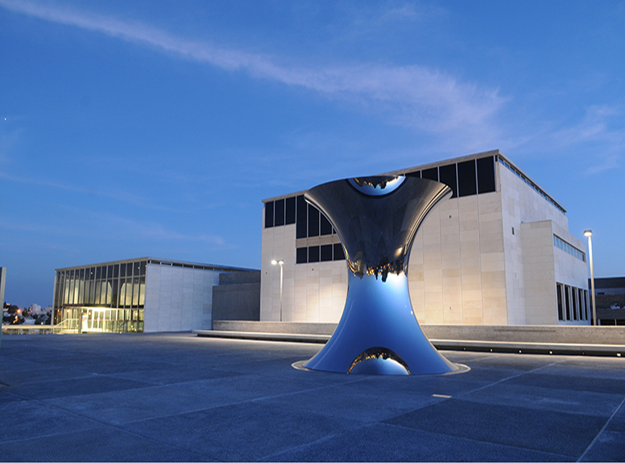

מוזיאון ישראל
המוזיאון הלאומי של ישראל, ביתם של מגילות ים המלח ואמנות מכל העולם.
לפרטים נוספים →
מוזיאון רחב ידיים המכיל אוספים ארכיאולוגיים, אמנות יהודית ואת היכל הספר המפורסם.
- כתובת: דרך רופין 11, ירושלים
- טלפון: 02-670-8811
- אתר: imj.org.il